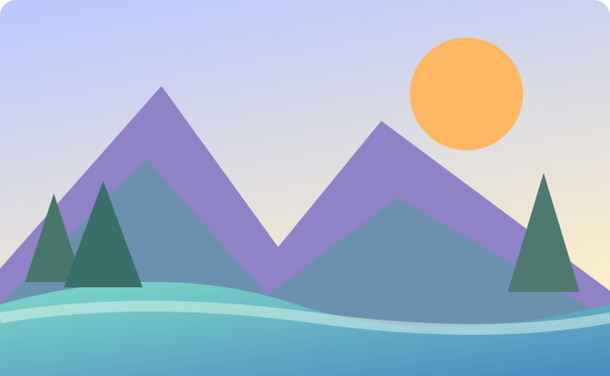

LAB 07 / ADVANCED CSS
CSS Filters
Áp dụng saturate, grayscale, contrast, brightness, blur, invert, sepia, hue-rotate và opacity lên cùng một ảnh.
Minh họa trực tiếp
HTML + CSS · chỉnh kích thước cửa sổ để thử

Áp dụng saturate, grayscale, contrast, brightness, blur, invert, sepia, hue-rotate và opacity lên cùng một ảnh.